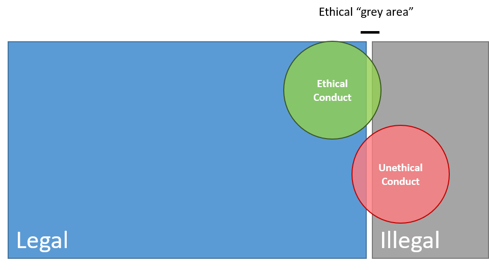
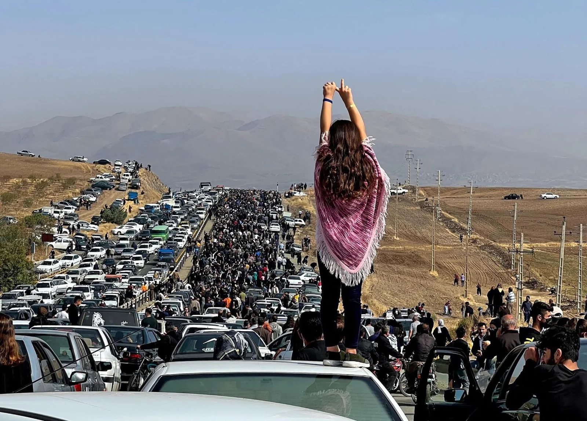
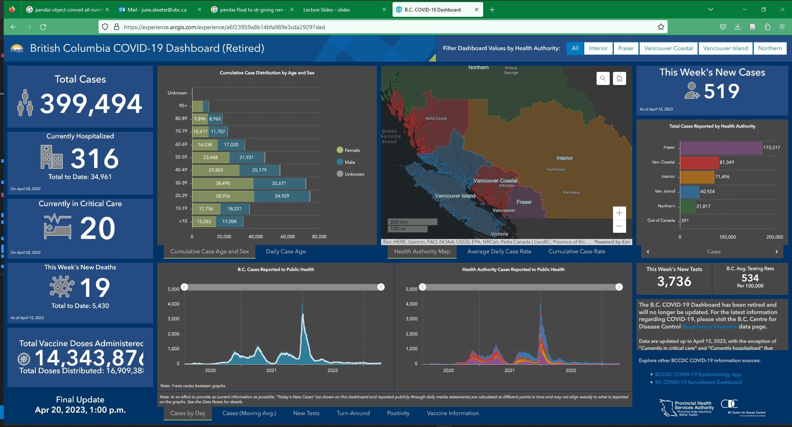
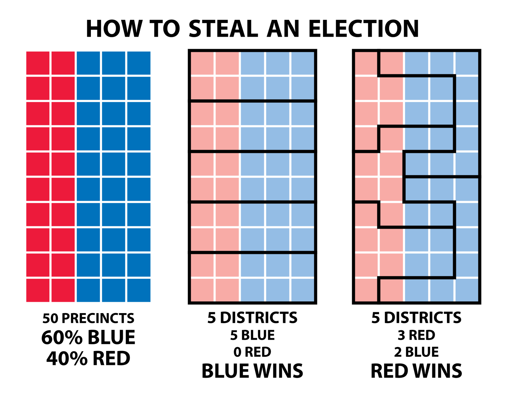
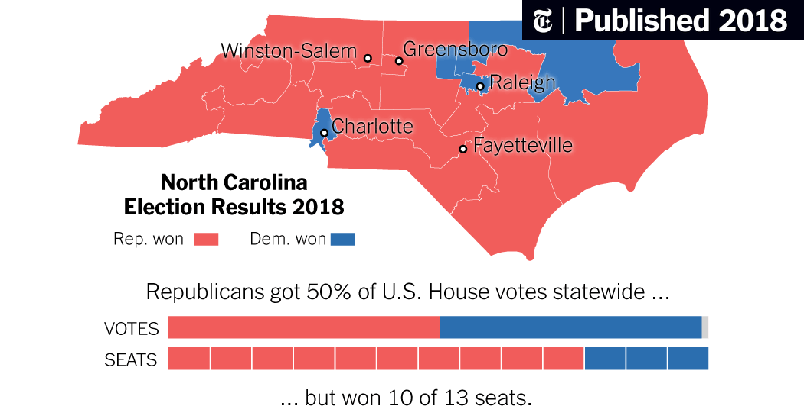
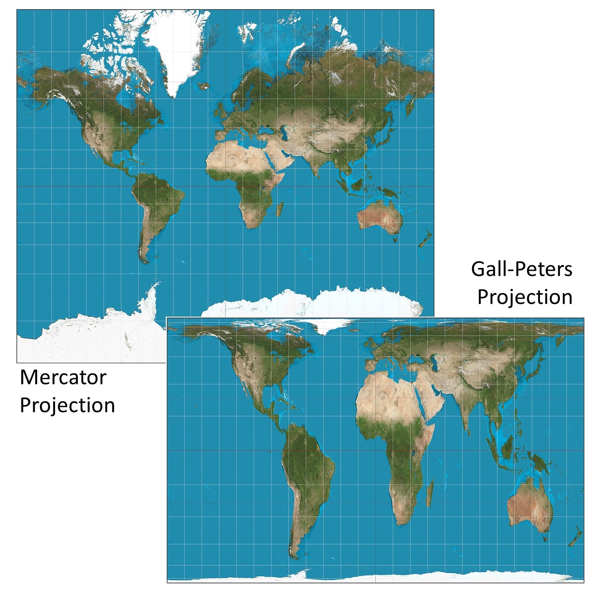
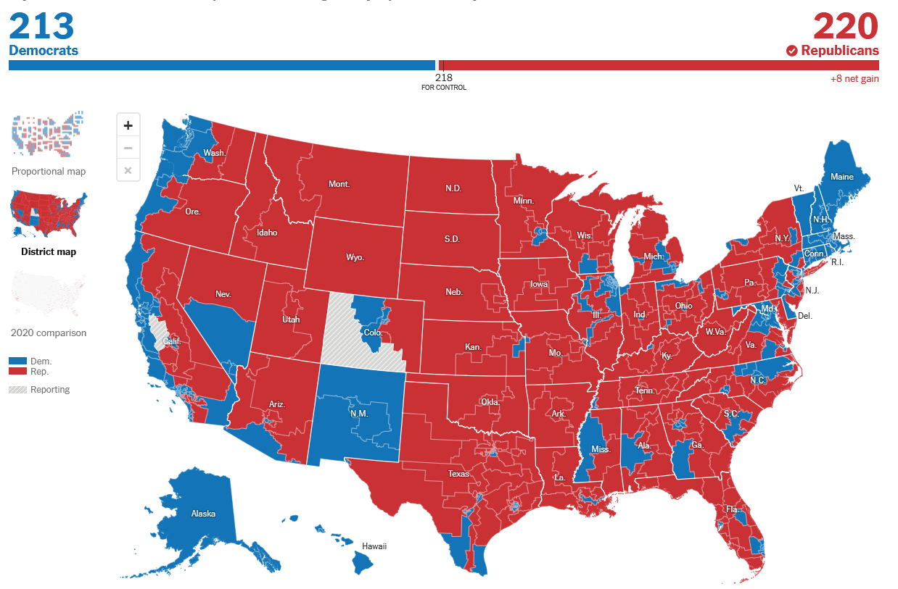
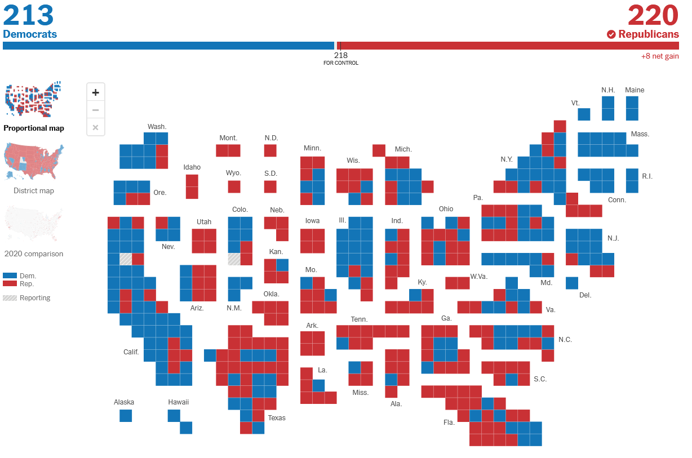
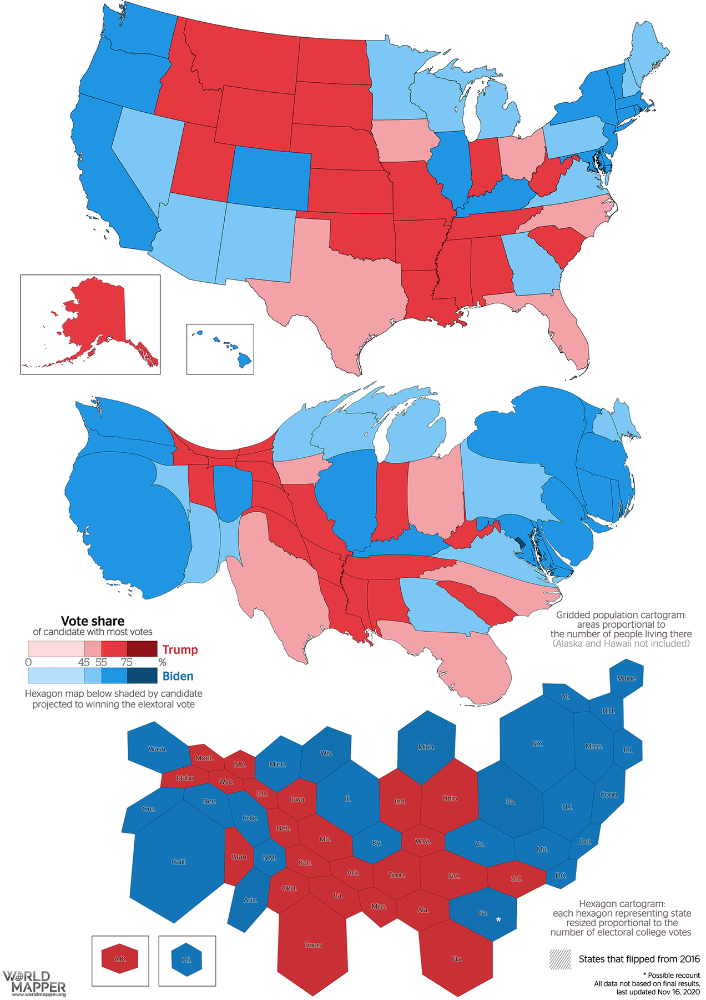
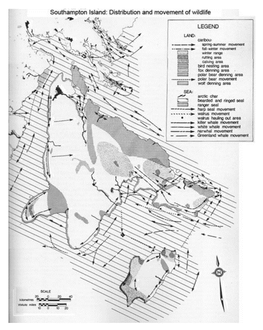

GIS, more than many disciplines has immense potential to have an impact on peoples lives.
Ethics is a branch of philosophy that deals with the nature of right and wrong. It is a theory or set of standards that inform moral practice.


This branch of philosophy deals with the nature of right and wrong:
Research often involves handling the private, personal information about individuals and minority groups:
GIS has the potential to be more intrusive in to people’s every day lives other sciences:
More detail gives = more accurate; allows for better decision making but infringes on privacy.
How specific is too specific?
Point locations risk exposing personal information
Guidelines surrounding exposure of information
Public health agencies don’t release information about individuals
Stats Canada masks census data when they don’t get enough respondents

What side of a border you live up on can have drastic impacts on outcomes. Where you live determines:
Borders are often arbitrary and modifiable.

The systematic denial of services to racially marginalized groups by government and lending institutions in order to forcibly segregated communities.
The modifiable areal unit problem is a serious problem. Instead of voters choosing their politicians, it allows politicians to choose their ____.
Every cartographic choice you make can have ramifications.
How we choose to display our data can have a big impact on how it is perceived
Maps influence the way people think
They can reinforce (or counter) biases individuals may hold
All maps lie, but some lie more than others.
Abstraction is a necessary part of map making
But it needs to be done carefully
Sometimes the lies are intentional.

Sometimes the lies are careless oversights.

Sometimes the lack of context is the issue.

Sometimes the lack of context is the issue.

Sometimes the lack of context is the issue.

Who has access to GIS? ESRI products (e.g. ArcGIS Pro) have very expensive licensing fees. Beyond just the cost of the software, hardware to run GIS is not always accessible, and GIS training takes time.
Open source software is free to access, platforms are created and maintain by volunteers. There are open source alternatives that can provide some access to GIS:
Open source software and documentation make GIS more
There are many ways the public can be involved in GIS; the can participate actively or passively.
The collection, processing, assembly, and dissemination of geographic data provided voluntarily by individuals. Is sometimes, part of participatory approaches to GIS; sometimes its just using freely provided information that people are unaware of.
Allows interested volunteers and researchers to team up to address some scientific question.
The goal is the empowerment and inclusion of marginalized people. These groups tend to have little or no voice due to extremes of location, poverty, racism, sexism, anti-religious feelings, etc.
Begins through a process of community mapping, with many steps and a set of long-term goals for the community
Members of the community generate their own data and construct their own maps
Bring members together to share their maps and combine into a community map/database
These community efforts can then be coded into a GIS to systematize the community’s knowledge and allow for greater spatial analysis to occur
Emphasizes engagement throughout the GIS process
Participatory GIS to safeguard Inuit rights to Arctic lands and waters.

No references to published work or other secondary sources of information:
It is important to reflect on your relation to your work. In the social sciences, positionality is especially important, because a researches privileges, biases, and preconceptions can drastically impact the people and communities they are working with.
Some important questions to ask yourself, and things you may want to disclose depending on the context.
This is the concept of reflecting on your relation to your work, what your motivations are, and what biases you might have.